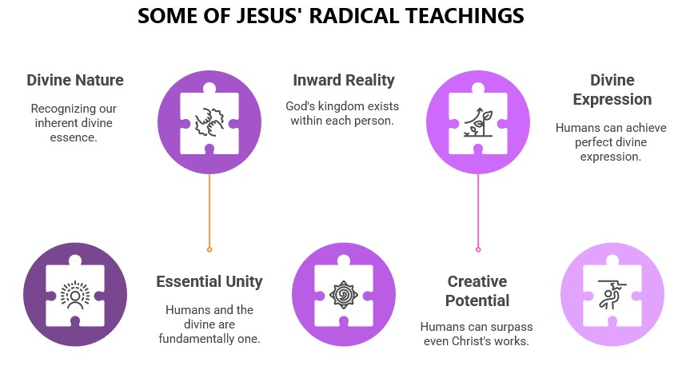

Throughout this book, we've explored how modern discoveries about consciousness, quantum physics, near-death experiences, and human potential align with Jesus' most revolutionary—and often most neglected—teachings. We've seen how his declaration "You are gods" wasn't hyperbole but a direct statement about our true nature. We've examined how his instructions for prayer, presence, and compassion weren't just moral guidelines but practical methods for accessing higher consciousness, connecting with the Father.
Jesus wasn't merely a religious reformer or moral teacher. He was a consciousness revolutionary who understood what science is only now beginning to verify—that reality is responsive to consciousness, that we are multidimensional beings not limited to our physical bodies, and that we have access to divine creative power when we awaken to our true nature.
This teaching alone, properly understood, reorients us from seeking external salvation to recognizing the divine kingdom already present in consciousness itself. The transformation Jesus invited wasn't about believing the right doctrines but about a radical shift in perception—seeing from the kingdom within rather than the ego's limited perspective.
These teachings point to a spirituality far more empowering than what most religious institutions have presented. They reveal a Jesus who didn't come to establish another religion but to liberate us from all systems that limit our recognition of our divine nature.
This understanding transforms our relationship with Jesus himself. Rather than worshipping him as an unattainable ideal or a unique divine exception, we can recognize him as the wayshower—the one who demonstrated what's possible when a human being fully awakens to and embodies their divine nature.
His invitation wasn't to believe in him but to believe him—to trust his revelation about who we truly are and to follow his example in expressing that divine nature through compassionate living.
This shift doesn't diminish Jesus but elevates our understanding of his mission. It reveals him not as the exclusive son of God but as the "firstborn among many" (Romans 8:29)—the pioneer who showed us our own divine potential.
The implications of this understanding extend beyond individual spiritual growth to our collective evolution. Jesus' prayer "that they may be one as we are one" points to a vision of humanity awakening to its essential unity in divine consciousness.
In a world fragmented by division, conflict, and ecological crisis, this awakening isn't just spiritually significant but practically essential. The recognition of our shared divine nature provides the foundation for sustainable relationship with each other and with the planet.
This prayer reveals that the ultimate purpose of spiritual awakening isn't individual enlightenment but collective transformation —creating a world that manifests the love, harmony, and creative potential of divine consciousness.
As we conclude this exploration, I invite you to consider what it means to take Jesus' most revolutionary teachings seriously—to embrace the truth that you are, in essence, divine consciousness having a human experience.
This isn't abstract philosophy but practical spirituality. It means:
The journey we've explored in this book isn't about adopting new beliefs but about awakening to what you've always been beneath the veil of forgetting. It isn't about becoming something you're not but recognizing what you already are.
Jesus knew this truth two thousand years ago. He lived it, taught it, and demonstrated what's possible when a human being fully embodies their divine nature. And his invitation still stands today—not to worship him as an exception but to follow him in recognizing and expressing the divinity that is your birthright.
You are more powerful than you've been led to believe. You are more divine than you've been taught. And when you awaken to this truth—when you begin to live from it—you participate in the transformation Jesus envisioned: heaven on earth, the kingdom made manifest through awakened consciousness.
This is the good news Jesus actually taught—not that you need salvation from outside but that the kingdom is already within you, waiting to be recognized, embraced, and expressed.
"You are gods." It's time to live from that truth.